IDEA292
Interdisciplinary Project Lab
Project 1: Paper Lampshade
For this project, we were tasked with constructing a paper lampshade that can be displayed on hooks sourrounding a wall-mounted LED bulb. The assignment emphasizes physical experimentation and manipulation of paper in order to investigate the relationship between form and material.
While I had never worked with paper as a medium beyond well detailed origami patterns, over the course of 3.5 weeks I developed a familiarity with using paper to create form. By "interrogating" the material, I slowly pieced together the tendencies and limitations of working with paper, informing how I refined each iteration of my project design.
Inspiration
As a IDEAS minor in the geomechanics and geosystems concentration, I wanted my project concept to be centered around earth science.
Immediately, my mind thought of the natural artistry of contour lines on topographic maps.
Inspired by a backpacking trip I took while abroad in New Zealand, I wanted to mimic the winding rivers that flow through glacially carved fjords.
I focused my design on creating organic shapes and building elevation by folding concentric arcs. With this in mind, I was also interested in exploring how light interacts with paper at varying angles.
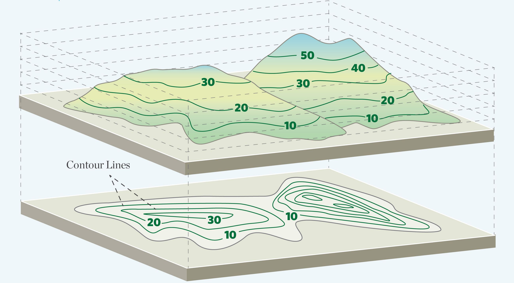
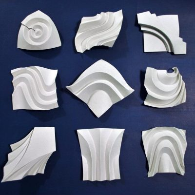
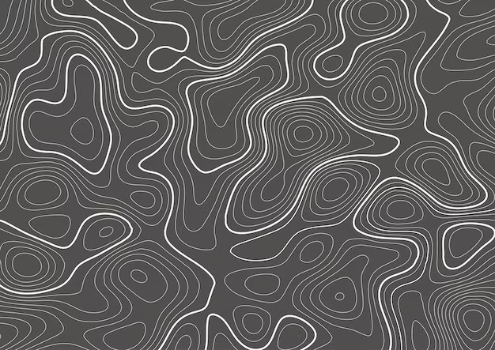
Experimentation
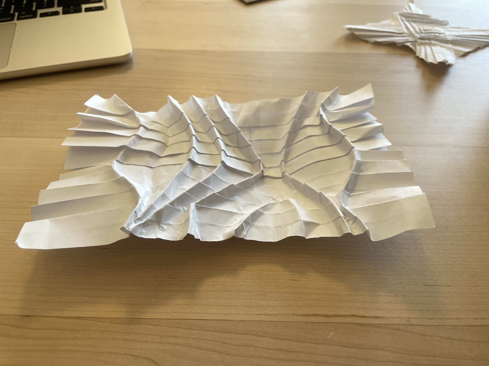
I initially started experimenting with using pleated paper as a base for curves, inspired by Goran Konjevod's collection of organic origami sculptures.
This was an effective technique, but the horizontal lines running across the page didn't fit into my vision for freeform concentric shapes more typical of topographic maps.

From there, I then moved toward a gridded approach. While satisfying, the meticulously folded grid felt too calculated to represent the naturally crafted landforms I was inspired by.
Though, this experiment did show me that my goals of building vertical elevation was not far out of reach.

Straying away from straight lines, I tried using laser cut perforations to act as paths to guide folds. I also laser cut MDF whose edges I could press into and roll over the perforations in order to easily create creases in the paper.
At this point, I was able to make curved folds but my paper would end up wrinkled and sometimes torn.
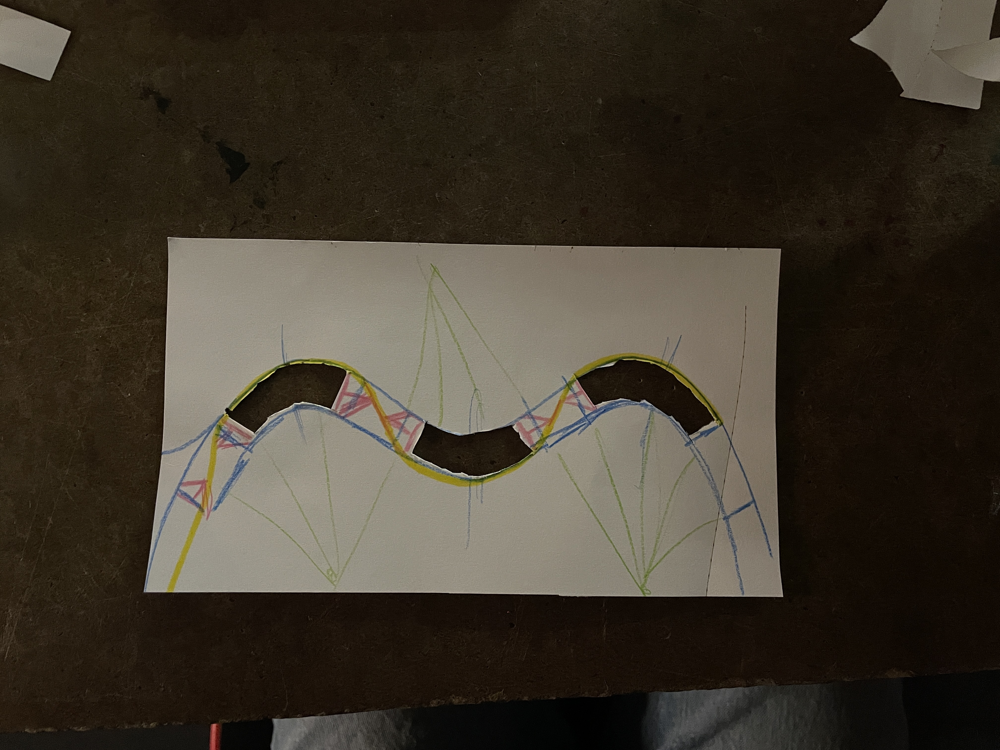
I realized that folding curves meant the paper would want to bend. I also realized that the paper was most likely to tear at the peaks of curves, meaning these are locations of high stress.
By color coding my folds and bends, I got a good sense of how the paper wants to move when I make certain design decisions.
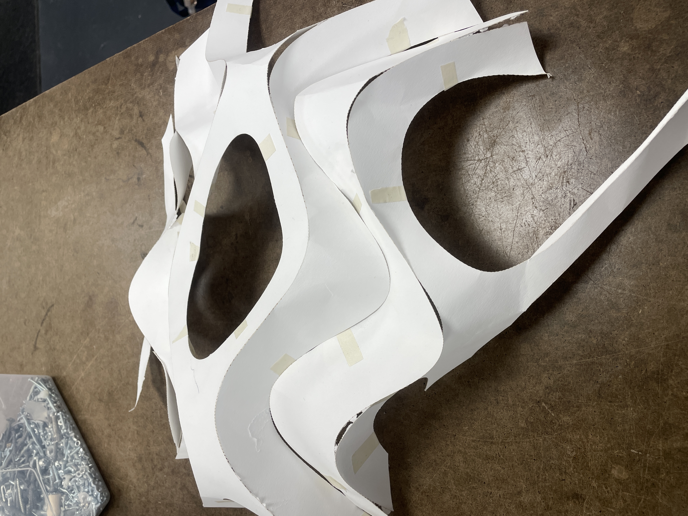
Before I could figure out how to assemble everything from one sheet of paper, I decided to separate each band and use tape to add hinges for movement in a new direction.
This paper shell helped me realize it was still possible to create more depth coming out of the board if I could figure out how to fold paper hinges between each curved section.
Fabrication
Curve folding was the most fundamental concept for me to grasp in order to fulfil my design intentions.
With each curved fold, the paper wants to bend. Accounting for the concavity of each curve became crucial when designing my vector files.
As I developed my project, I grew determined to construct my project so that it could be folded from a single sheet of paper.
I dedicated several weeks to understanding how the paper reacts to stress.
Importantly, I learned to not fight the material but allow it to take form based on the forces acting upon it.
Digital Files
Techniques
Construction
I designed vector files in Inkscape before sending them to be laser cut.
I used color to denote which lines would be mountain folds, valley folds, or cuts.
Intermediate designs featured cuts placed at the apex of curves, to add relief where the paper was likely to tear.
Ultimately, my final design (bottom right)featured gaps and tabs between the units of mountain folds which allowed me to create volume in a third dimension.
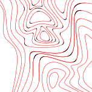
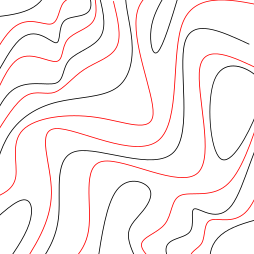
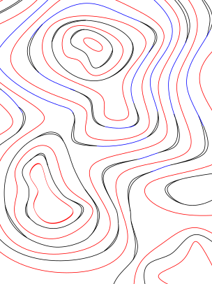
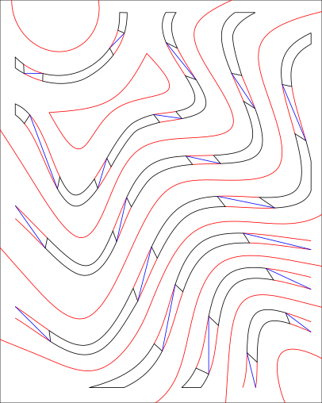
Paper is a delicate material and overhandling it can affect its ability to hold form or create unintentional creasing. Meticulously planning ahead and creatively using the tools available made the final piece possible.
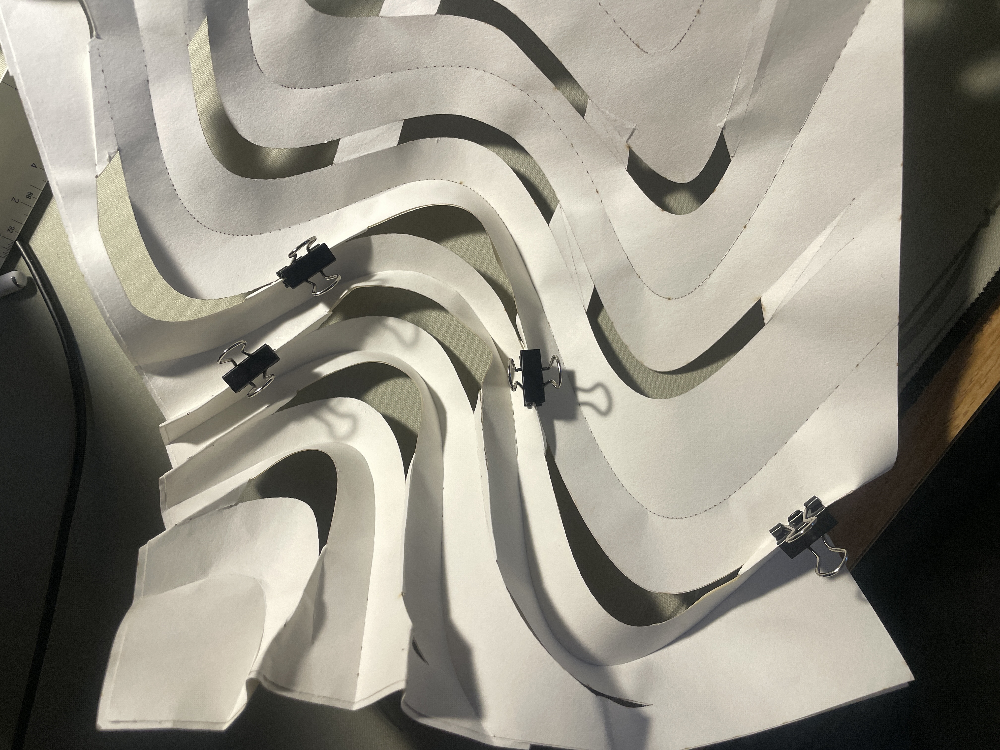
The diagonal valley folds on the tabs between mountain fold units were what created the voluminous inward curl of the single sheet.
Binder clips were useful for ensuring good pressure and contact while the glue dried.
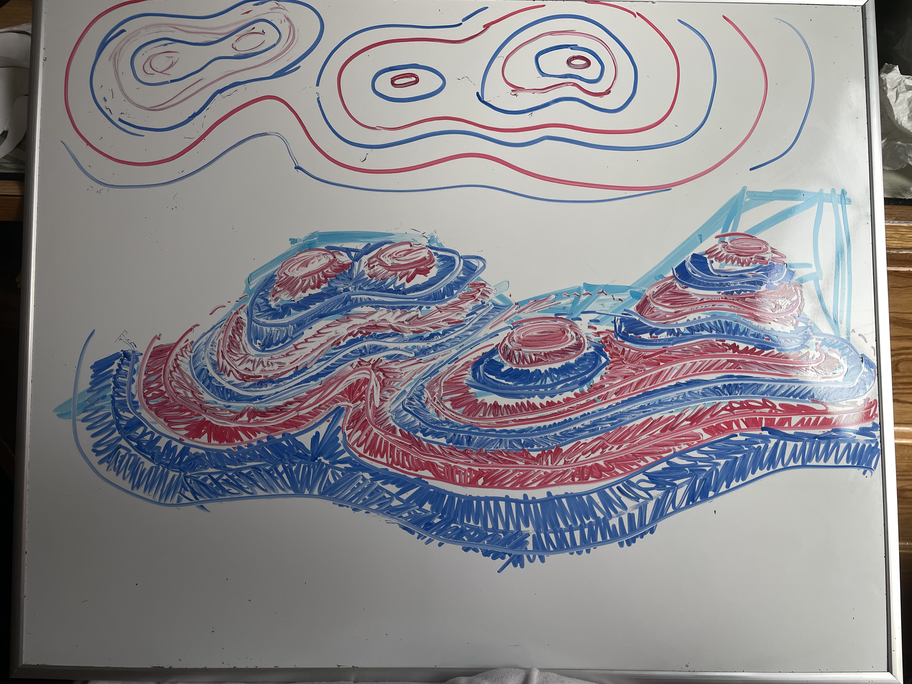
Though there exist programs that can simulate origami folds, the curves and varying fold angles within my design were not well visualized.
Instead, I found drawing perspective views and color coordinating fold direction was a more helpful route.
Most of my time was spent trying to understand the ins-and-outs of working with paper as a construction material. It was only on the last night before my project was showcased that each piece of knowledge I learned over 3.5 weeks culminated together into a final form.
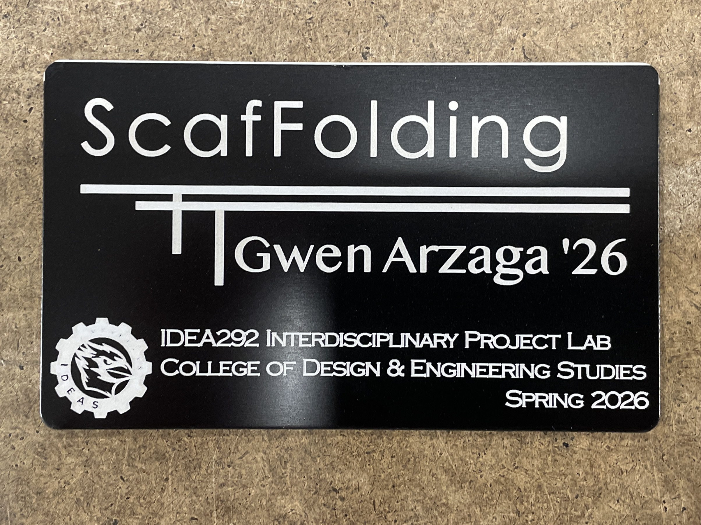
There is a paradoxical nature to my project that I wanted to capture in its title:
Organic shapes creating rigidity. An interconnected form only made possible by its gaps.
I found an apt comparison by thinking of my topographic inspiration almost as the floorplan or scaffolding of the land. It was a whole day later before I had even realized it had the word folding in it, which I capitalized for emphasis.
I was conscious of the fact that the paper would naturally shrink as I folded it up. I used a 20x16 sheet, dimensioned slightly smaller than the bed of the Epilog laser.
At this scale, the piece could sit on the hooks at a diagonal tilt, perfectly covering lightbulb in the middle, and cast shadows along where the edges make contact with the board.
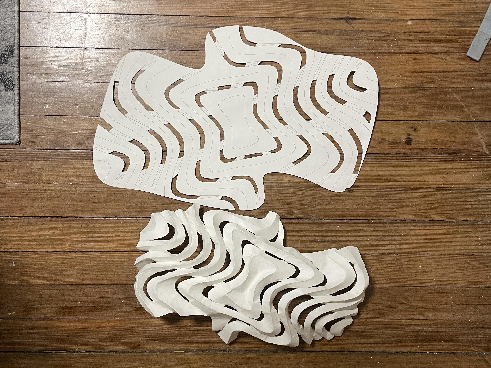
Gallery
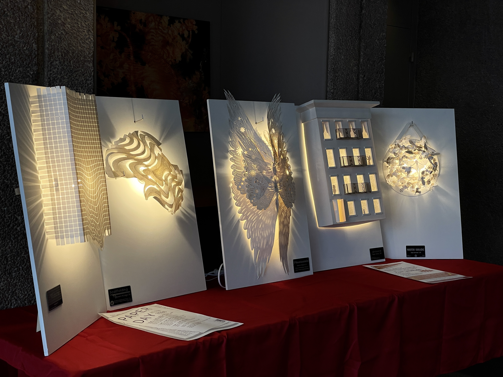
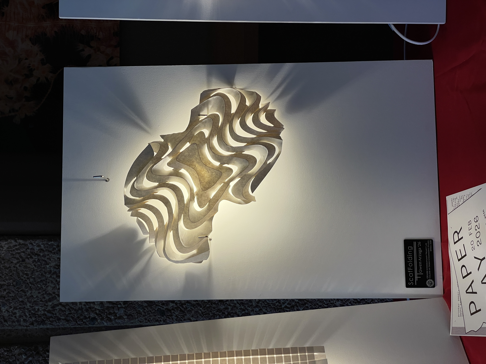